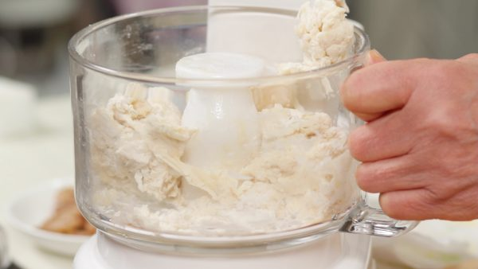
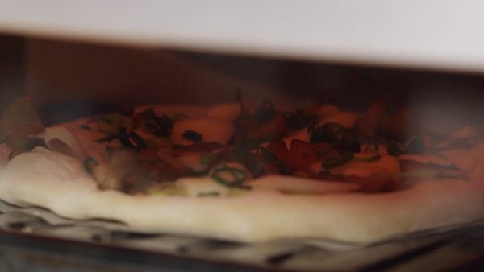

NOS RECIPE | Open Source Proper Recipe Website
| HOME | RECIPE LIST | ABOUT & DONATE |
Teriyaki Chicken Pizza
Created : 2017-04-11 | Author : Cooking With Dog | Bread Recipes
|
1. Let's make the pizza dough. Add the water to the instant dry yeast and stir to mix. The yeast
will be mixed in the dough later so you don't need to dissolve it completely at this stage.

2. Set a kneading blade in the food processor. Then, add the bread flour, cake flour, sugar, salt, olive oil and the diluted yeast. 3. Combine the mixture in the work bowl. This will avoid scattering the flour and lead to better results in the kneading process.  4. Cover and turn the processor to low speed. Then, gradually switch to high speed. Knead the dough for about 2 minutes until the surface is smooth and glossy. The kneading time slightly varies depending on the type of processor so adjust the time accordingly. 5. Remove the dough from the work bowl. Dust a cutting board with bread flour and place the dough onto it. Halve the dough with a scraper. 6. Take the half of the dough and shape it into a ball. Then close the bottom. 7. Next, coat the bottom of a bowl with olive oil and place the dough piece into it. Repeat the process for the other half of the dough. If a larger bowl is available, you can place both dough balls in the same bowl. 8. Coat the surface of the dough with olive oil to avoid drying out. 9. Cover each bowl with a dampened towel. Then, place a lid on the bowls. Rest the dough in a warm place at approximately 35 °C (95 °F) for about 1 hour. 10. Now, the fermentation has developed and the dough has risen. Dust the cutting board with bread flour and carefully remove the dough ball. 11. Dust the dough with bread flour. Flatten the dough with your palm but avoid pressing the edges. 12. Then, stretch the dough from the center outward as if you are pushing away the air inside. Keep stretching the dough into a large round sheet until it reaches about 20cm (7.9") across. 13. Then, place the dough onto a sheet of round parchment paper. 14. Let's season the sliced long green onion and maitake mushrooms. Lightly salt and pepper. Drizzle on the olive oil. Toss to coat. 15. Then, distribute the onion and mushrooms onto the dough. Alternatively, shiitake, shimeji or king oyster mushrooms can be used. 16. Next, top with the teriyaki chicken pieces. Pour over the teriyaki sauce. 17. Arrange the sliced mozzarella cheese. You can also add your favorite type of pizza cheese to taste. Sprinkle on the chopped spring onion leaves. 18. Be sure to preheat the oven to 250 °C (480 °F) while stretching the dough. Place the pizza into the oven and bake at 250 °C (480 °F) for about 4 to 5 minutes. Using an upturned baking sheet will make the pizza closer to the heat source.  19. When the melting cheese makes a sizzling sound and the dough turns golden brown, it is ready. Remove the pizza with tongs. 20. You can place the pizza onto a clean cutting board and cut into pieces with a pizza cutter. The shichimi chili powder goes great with this teriyaki chicken pizza. You can also top with sansho pepper to taste. |